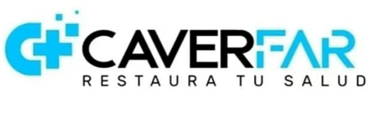

Responde 4 breves preguntas para identificar la mejor opción para ti.
Existen alternativas efectivas y seguras adaptadas a tu perfil. Haz clic abajo para consultar tus opciones por WhatsApp con empaque discreto.
100% Anónimo • Restaura tu salud con privacidad garantizada